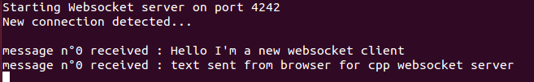

Websocket non-blocking C++ Server implementation
http://akinaru.github.io/websocket-non-blocking-cpp/
Websocket non-blocking Server implementation using QTNetwork framework (QT4)
Last update 16/05/2015
- [16/05/2015] add SSL/TLS support
- [14/05/2015] add Client event listener
You will find :
- source in ./libwebsocket folder
- test project with secured and unsecured JS websocket client exemples featuring interactions with websocket server in ./libwebsocket-test folder
How to launch Websocket Server ?
WebsocketServer server;
bool success = server.listen(QHostAddress(ip),port)
Specifying your own ip / port
How to monitor my clients connected to server ?
Add an instance of ClientSocketHandler you can import with #include "ClientSockethandler.h" :
ClientSocketHandler *clientHandler = new ClientSocketHandler();
Just add this listener to server object.
server.addClientEventListener(clientHandler);
In this ClientSocketHandler you have 3 callbacks that will notify you on client connection change and arrival of client messages :
-
void onClientClose(IWebsocketClient &client);notify when client socket close -
void onClientConnection(IWebsocketClient &client);notify when client socket connect to server -
void onMessageReceivedFromClient(IWebsocketClient &client,std::string message);notify when a socket client send a message to you
You can send a message back with IWebsocketClient sent from the same callback with sendMessage(std::string textToSend) method :
void ClientSocketHandler::onMessageReceivedFromClient(IWebsocketClient &client,string message)
{
cout << "Client socket message received : " << message.data() << endl;
client.sendMessage("OK I received your message !");
}
How to launch a SSL secured websocket server ?
WebsocketServer server;
server.setSSL(true); // set SSL to true (default is false)
Then you set your public/private/ca certificates separately with respective methods :
server.setPublicCert(SslHandler::retrieveCertFromFile(PUBLIC_CERT));
server.setPrivateCert(SslHandler::retrieveKeyCertFile(PRIVATE_CERT,PRIVATE_CERT_PASS));
server.setCaCert(SslHandler::retrieveveCaCertListFromFile(CA_CERTS));
You can use static method from SslHandler in libwebsocket-test project folder
- public cert must be a QSslCertificate : SslHandler::retrieveCertFromFile(char * filepath)
- private cert must be a QSslKey : SslHandler::retrieveKeyCertFile(char * filepath,char * passKey)
- ca cert must be a QList of QSslCertificate : SslHandler::retrieveveCaCertListFromFile(char * filepath)
Eventually add event listener as described above and start websocket server :
server.addClientEventListener(clientHandler);
bool success = server.listen(QHostAddress(ip),port)
Specifying your own ip / port
Troubleshooting SSL errors with local browser JS client
Bad certificate | Unknown CA errors
This could mean you didn't import your not-trusted-CA certificate into your browser.
The remote host closed the connection
Usually happen when your browser closed the connection before the end of SSL handshake. If you already added your CA to your browser dont worry. Both Chrome and Firefox need to MANUALLY add the certificate (in a popup) so putting it in parameter menu don't change anything.
Just load your URL with "https" : https://127.0.0.1:8443 . Browser will prompt you to accept the certificates and it will probably solve your connection error.
Browser tested
This has been tested on following browser :
- Chrome
- Chromium
- Firefox
Debugging SSL connection error
I recommmend using openssl command line tool to debug ssl connection :
openssl s_client -connect 127.0.0.1:8443
Server-Client key/cert generation
Certs are in libwesocket-test/certs folder, you will find server,client and ca cert build with easy-rsa :
https://github.com/OpenVPN/easy-rsa
With last release of easy-rsa, you can build your own key with the following :
-
./build-ca: generate a new CA for you -
./build-server-full myServer: will build for you public cert and private cert signed with CA for server -
./build-client-full myClient: will build for you public cert and private cert signed with CA for client
How to close my websocket server ?
server.close();
COMMAND LINE SYNTAX
From /libwesocket-test/release folder :
The following will open a websocket on port 8443 (default port value for my exemple)
./libwebsocket-test 127.0.0.1 8443
You can add library path to LD_LIBRARY_PATH variable for a quick run :
LD_LIBRARY_PATH=$LD_LIBRARY_PATH:$ROOT/websocket-non-blocking-cpp/lib/:$ROOT/websocket-non-blocking-cpp/libwebsocket/release/
Exemple with Javascript Client
- Launch the websocket server on port 8443
- Open the javascript client page in ./exemples/js/ folder
=> You have now a complete websocket chat between C++ websocket server <-> javascript client in websocket


- Project is Qt4 compliant
- You can build it with qmake
- Development on QtCreator
- Specification from https://tools.ietf.org/html/rfc6455